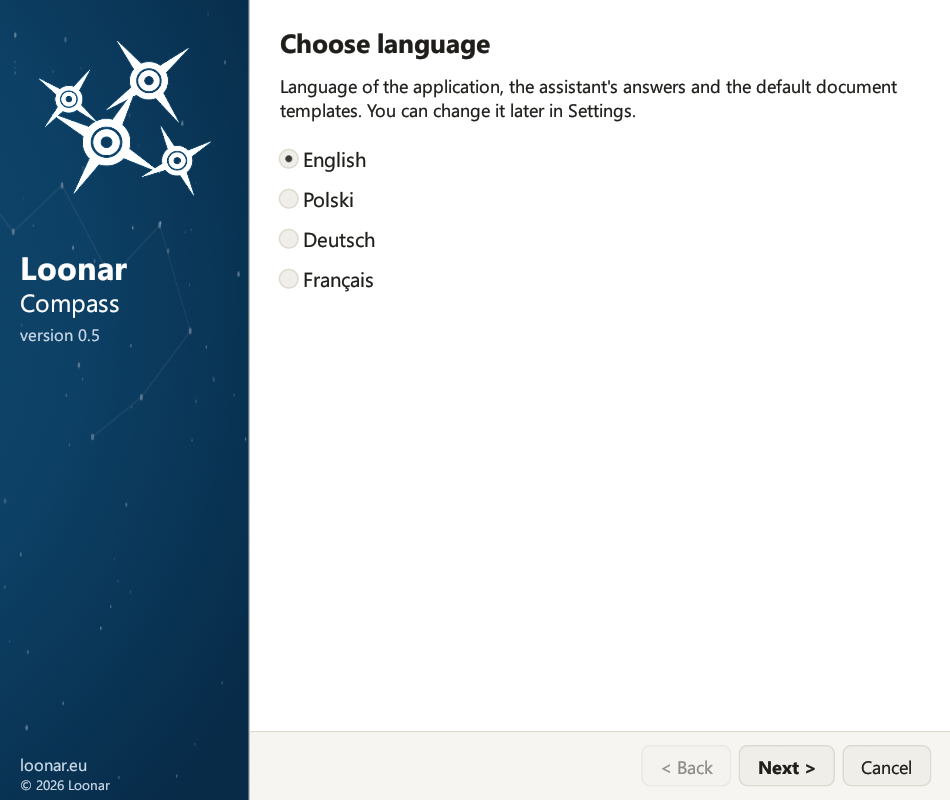
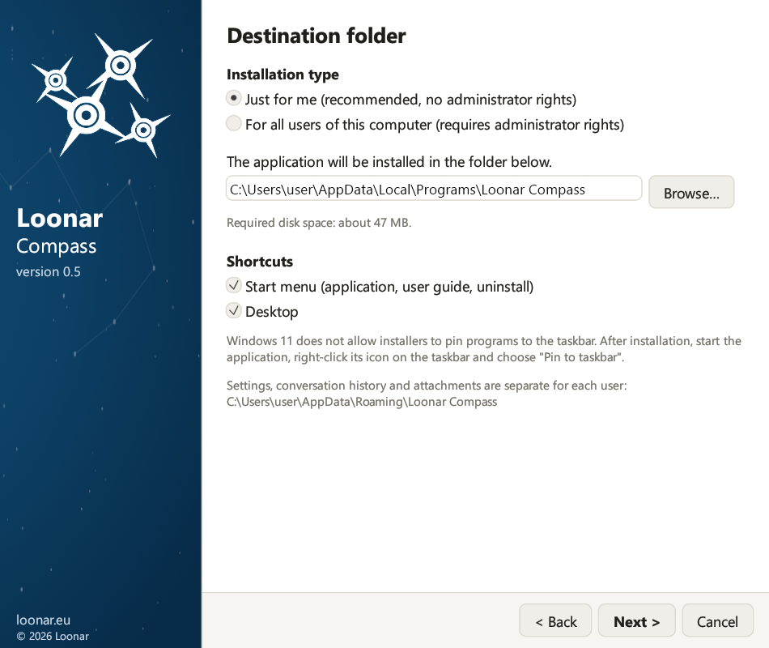

This is the documentation of version 0.9.1. The newest version is 0.9.2: go to the newest documentation
Installation guide
2. Requirements
- The model is an EA project file .qea or .qeax, or is in a PostgreSQL, SQL Server, MySQL/MariaDB or Oracle database. Older file formats (.eap, .eapx, .feap) are not supported; Enterprise Architect converts an .eap/.eapx file to .qea with a project transfer (Settings → Model → Transfer → Full Project Transfer).
- A model in a database has user security enabled (in Enterprise Architect: Settings → Security → Enable Security), in “Require User Lock to Edit” mode. In a model file, security is optional: without it, the assistant needs no EA account. The application logs in to the model as a specific user and locks objects while saving. When security is turned off, the locks are skipped; this is not a supported configuration. In the application you mark this on the Model card of the settings with the options “The model has security enabled (EA user accounts)” and “The model requires a lock to edit (Require User Lock to Edit)” (chapter 5).
- A model with security enabled has a user account for the assistant (Settings → Security → Users), with a password and edit permissions. The account name can be anything, for example
claudeorassistant, but the account must exist. You enter its login and password on the Model card of the settings, together with the model file or database.
| What | Details |
|---|---|
| System | Windows 10 or Windows 11 (64-bit) |
| Enterprise Architect | Installed on the same computer, with a valid license. The application starts it in the background; while it runs, it takes up one license seat. Compass in EA (chapter 10) works in your EA window. |
| EA model | An EA project file .qea or .qeax (you need only its path), or a repository in a PostgreSQL database with user security enabled (you need: the server, port, database name, and the database user and password). A .qea file is meant for one person; .qeax for a small team sharing the file. For company use, give Compass a PostgreSQL role with SELECT only on the EA tables (t_*) and set the connection encryption to “Required, certificate verified” (chapter 5). Enterprise Architect saves with the same database account, so a model the assistant should also change needs INSERT, UPDATE and DELETE on these tables as well, never superuser rights. A repository on SQL Server, MySQL/MariaDB or Oracle: the same details, with the same rule for the account (chapter 5, “SQL Server, MySQL and Oracle”); saving needs an EA edition that supports DBMS repositories. |
| ODBC driver (SQL Server, MySQL, Oracle) | Only for a model on SQL Server, MySQL/MariaDB or Oracle: the 64-bit ODBC driver of the database vendor. For SQL Server, Windows already has its own “SQL Server” driver; Microsoft's “ODBC Driver 18 for SQL Server” (or 17) is better and is used first when it is installed. |
| Model user account | For a database model, or a model file with security enabled: the login and password of a user defined in the EA model. Ideally a separate account just for the assistant, so that its changes and locks are visible separately and do not clash with yours. |
| API key | A Claude API key from the Anthropic Console or, when you choose OpenAI as the provider, an OpenAI API key from the OpenAI platform (chapter 5). |
| Internet | An HTTPS connection to api.anthropic.com (or to api.openai.com when OpenAI is the provider). The application uses the proxy from the Windows Internet settings or from the HTTPS_PROXY and ALL_PROXY variables (chapter 18). |
| Confluence (optional) | Confluence Cloud or Data Center, only for publishing pages through the assistant: the Confluence address (https://), a token and the space key (chapter 13). Without them, pages are still created and you paste the code yourself. |
| Miro (optional) | Only for sending diagrams to a Miro board: an access token of a Miro app (chapter 12). |
| Microsoft Office (optional) | Only for PDF files made by the assistant: Word turns a document into PDF, PowerPoint a presentation (chapter 13). Word and PowerPoint files themselves are made without Office. |
| SharePoint (optional) | Only for documents in the team's SharePoint library: an app registration in Microsoft Entra ID with a client secret (chapter 13). |
| Node.js (optional) | Only for MCP servers started with npx, for example the ready-made Azure DevOps and Files servers (chapter 7). |
| Mail program (optional) | For reporting bugs and subscribing to news about new releases: a mail program set as the default in Windows, for example Outlook. |
3. Installation
Run the file LoonarCompass-Setup-0.9.exe. The wizard guides you through the steps with the Next and Back buttons. You do not need administrator rights unless you install the application for all users of the computer.

- Language. Polish, English, German or French. For a new installation, English is selected; for an update, the language saved in your settings. The chosen language applies to the wizard, the application, the assistant's answers and the default document templates; you can change it later in the settings (chapter 5).
- Welcome. The prerequisites and a list of things worth preparing before installation.
- What's new. When updating: the changes since the installed version. For a new installation: the changes in the current version.
- License agreement. Select “I accept the terms of the license agreement”.
- Usage statistics. The option “Send anonymous usage statistics (recommended)” is selected. The page explains what is sent and what never is; you can change your choice later in the “Usage statistics” view (chapter 18). The details that the wizard used to ask for (API key, model, Enterprise Architect) are now entered after the first start, in the “Settings” view (chapter 5).
- Destination folder. The installation type (described below), the program folder (Browse…) and the shortcuts: Start menu (application, user guide, uninstall) and Desktop. The option “Add Loonar Compass to Enterprise Architect” installs Compass in EA (chapter 10); restart EA after the installation.
- Ready to install. A summary of the installation type, folder, shortcuts and configuration. Click Install; the progress bar shows the percentage and the current step.
- Installation complete. With “Launch Loonar Compass” selected, the application opens after you click Finish.
Installation type
On the “Destination folder” page, you choose who the application is installed for:
- “Just for me (recommended, no administrator rights)”: the program is installed in
%LOCALAPPDATA%\Programs\Loonar Compass. Windows does not ask for administrator rights. - “For all users of this computer (requires administrator rights)”: the program is installed in
%ProgramFiles%\Loonar Compass, where only administrators can change files. Only in this case does Windows ask for administrator rights, after you click Install.
Settings, conversations and passwords are always stored for the user who runs the wizard (in %APPDATA%\Loonar Compass and in Windows Credential Manager), also when another person confirms the administrator rights and also in an installation for all users.

Updating from an earlier version
Earlier versions of the application were called Loonar EA Assistant: Loonar Compass takes over their settings, conversations, memory, templates and passwords automatically.
- An earlier version installed just for you is removed during installation (program files, shortcuts and the Windows entry); your data stays.
- If an earlier version is installed for all users, the “Ready to install” page shows it. You can remove it with the Remove the old version (administrator rights) button, or later in Windows Settings → Apps.
- On the first page, the wizard preselects the language saved in your settings (settings without a saved language, from versions 0.1 and 0.2, count as Polish), or English when there are no settings. Check this choice before you continue.
- Changing the language in the wizard does not translate the assistant's memory or your templates. To carry them over to a new language, change the language on the “Language and change approval” card in the settings after installation (chapter 5).
- A database password that older versions kept in the settings file is moved to Windows Credential Manager, and files with Polish names in the data folder get English names (for example
audit_log.jsonl).
21. Updating and uninstalling
Updating. Close the application and run the installer of the newer version. The wizard shows the “What's new” page with the changes since the installed version, suggests the same installation type and folder, and keeps your settings, conversation history, attachments, memory, templates and audit log. Updating from the earlier version under its former name is described in chapter 3.
New version notice. Every hour Compass checks on GitHub whether a newer release exists and then shows a bar at the top of the window: What's new and download opens the release page, Not now hides the bar until the next version. In EA the notice appears once in the "Loonar Compass" tab of System Output. Compass never downloads or installs anything by itself, and the request carries no identifier of the installation. Switch the check off in Settings → New releases (newsletter) or with app.update_check=false; the hub administrator can switch it off for everybody ("update_check": false in the team policy).
Closing the application. Closing the window also closes the Enterprise Architect session started in the background by the application, so the EA license is released immediately.
Uninstalling. Close the application. Use the “Uninstall Loonar Compass” shortcut in the Start menu or the “Loonar Compass” entry in Windows Settings (Apps → Installed apps). The uninstaller removes the program files, the shortcuts and the system entry, showing the progress on a bar. For an installation for all users, Windows asks for administrator rights. Your data stays unless you select:
- “Remove settings, conversations, attachments, memory, templates and the audit log”: deletes the whole user data folder
%APPDATA%\Loonar Compass, - “Remove the API key, passwords and tokens from Credential Manager”: removes all the secrets, including the Confluence token and the database password.
In an installation for all users, only your own data is removed; the data of other users stays in their profiles.